Annotation is a crucial method for a clear and understandable design.
Annotation helps other users understand what is supposed to be happening in the translation and helps the creator when returning to a workspace after a long interval (take it from me that this is especially important!)
You can apply three different types of annotation to a workspace.
Custom Annotation
Custom annotation is a comment created by the user. It can be connected to a workspace object (transformer or feature type), connected to a workspace connection, or can float freely within the workspace.
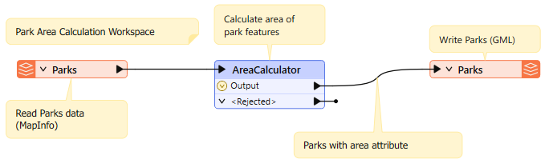
To create an attached custom annotation, right-click a canvas object and select Add Annotation, or use the shortcut Ctrl+K when the object is selected.
To create a floating custom annotation, right-click the canvas, select Insert Annotation, or press Ctrl+K when nothing is selected.
When you place an annotation, you can change the font style, font size, and background color; you can also add hyperlinks, bullet points, and tables.
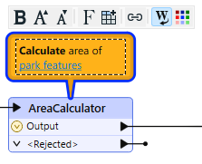
You might ask: "Why would I use annotation when I can just rename my transformers to make their function more explicit?" This is a good question! Some FME users like to rename transformers to describe what they are doing. However, we've seen some things that could be improved with this approach. First, it's hard to fit enough description in a short name. Second, other users (or yourself in the future) will have yet to learn what the original transformer was and will likely have to open it to see how it is configured. Ultimately, this method saves a little time, but you and your organization can decide if you prefer it.
Summary Annotation
Summary annotation is an FME-generated comment providing information about any workspace object. This item can be a source or destination feature type or a transformer.
The summary annotation is permanently blue to distinguish it from other annotations. It's always connected to the item it relates to and cannot be detached.
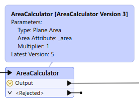
The nice thing about Summary Annotation is that it automatically updates in response to changes. That makes it very useful for checking transformer parameters (or reader/writer schemas) at a glance. It's beneficial when the parameters are set through a wizard and are more awkward to check (for example, the SchemaMapper or FMEServerJobSubmitter transformers).
Parameter Annotation
As of FME 2024.1, you can enhance your ability to document and understand your data workflows by allowing context-specific annotations directly within Parameter Editor dialogs. This ensures that relevant information is continuously visible without cluttering the workspace.
Anywhere you set a parameter via text or in a table, look for the Add Annotation option to add an explanation for why you configured the parameter this way:
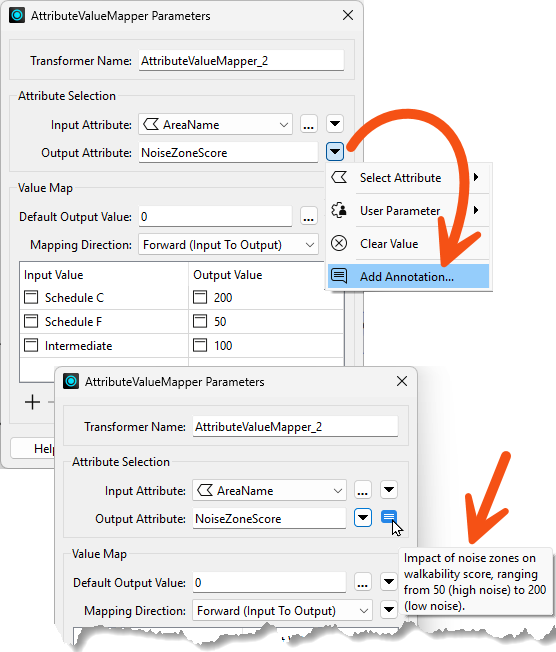
Parameter annotation appears in summary annotation, so you can use it as a way to add custom comments while still taking advantage of summary annotation's automatic update features.
Which Annotation Type Should I Use?
You should use summary annotation to show your actions and custom annotation to clarify why you are taking those actions. A good example is when you are not using default values for a transformer or feature type.
Use summary or custom annotation to call out details you wish to be available at a high level, i.e., directly on the canvas. Use parameter annotation for more complex or specific explanations of specific parameter values.
You can convert a summary annotation to a custom annotation by using this context menu option:
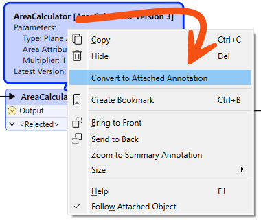
This method allows you to extract the information from a summary annotation but edit it as a custom annotation. Note, however, that a converted summary annotation no longer updates automatically!
Exercise
Jennifer has cleaned up the connections in her walkability workspace and now wants to document it with annotations so that she and her colleagues can get up to speed faster the next time they open it.
In this exercise, you will:
Add attach annotation to transformers to explain what the workspace is doing.
Add parameter annotation to document complex calculations.
Add summary annotation to display transformer parameters on the canvas.
1) Open Workspace
Start FME Workbench (2026.1 or later).
Open your starting workspace (C:\FMEData\Workspaces\UseDataIntegrationBestPractices\annotate-your-workspaces.fmw).
2) Add Attach Annotation
Inspect the transformers and readers in your workspace to identify where annotation would help explain what is happening. If you need a reminder of what each section of the workspace does, refer back to the exercise in the Design Readable Workspaces lesson.
On a transformer or feature type, right-click and select Attach Annotation, or select it and press Ctrl+K.
Add annotation to explain what the transformer is doing and why where it isn't obvious.
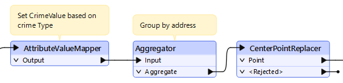
3) Add Parameter Annotation
The noise zone score calculation in the AttributeValueMapper_2 is complex. You'll add a parameter annotation to make it more transparent.
At the far right of the workspace, locate and double-click the AttributeValueMapper_2 transformer to open its parameters.
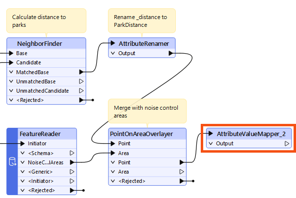
Next to the Output Attribute field, click the drop-down arrow and select Add Annotation.
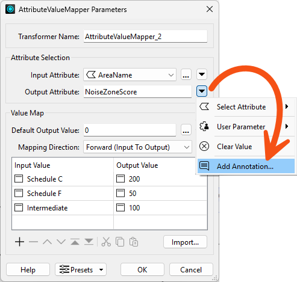
In the Annotation Text field, enter: Impact of noise zones on walkability score, ranging from 50 (high noise) to 200 (low noise).
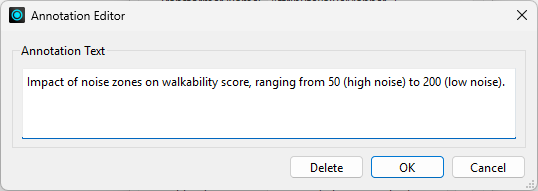
Click OK.
Next to NoiseZoneScore,hover over the new blue icon and confirm the annotation appears.
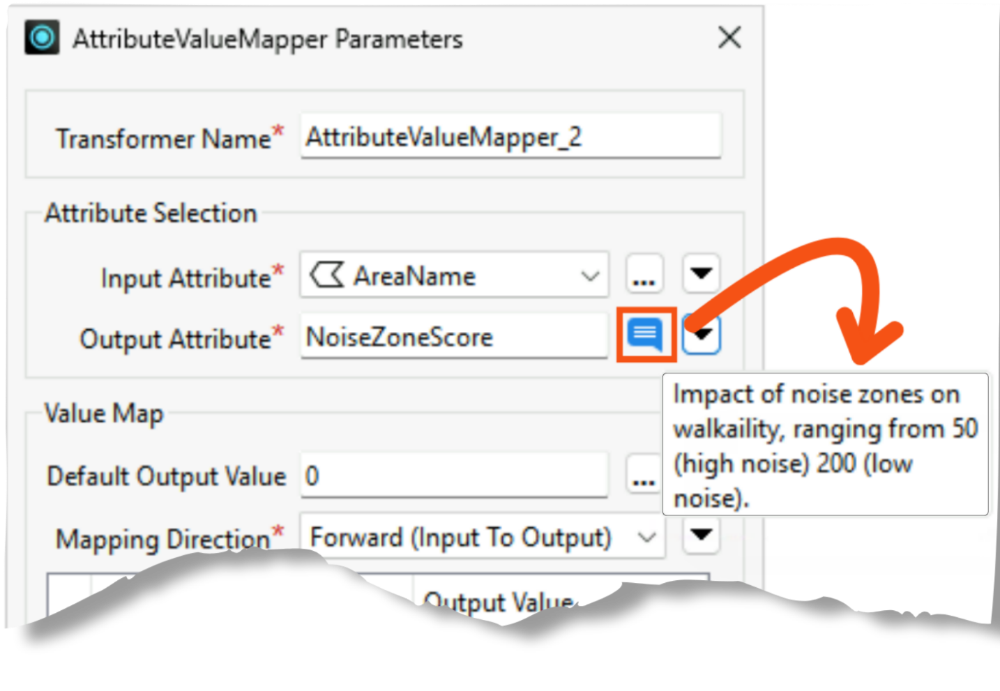
Click OK.
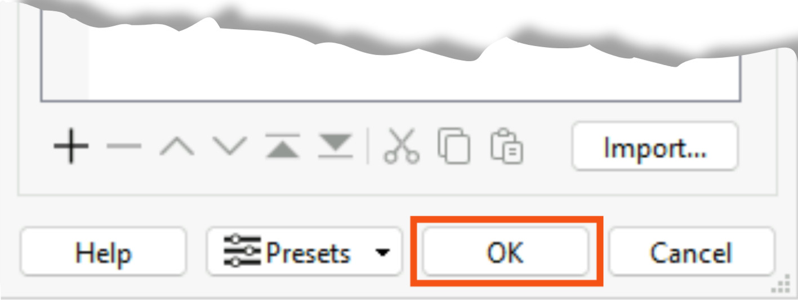
4) Add Summary Annotation
You'll display a summary annotation on AttributeValueMapper_2 to confirm it shows both the mapping table and the parameter annotation you just added.
Right-click AttributeValueMapper_2 and select Show Summary Annotation.
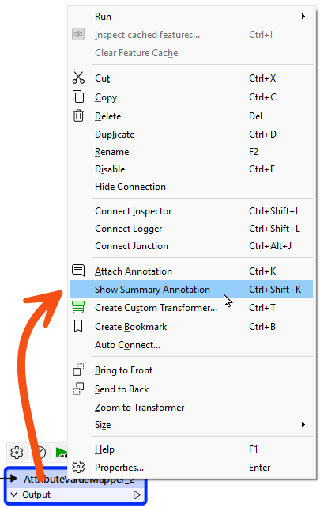
Observe that the summary annotation now shows the mapping table and the parameter annotation you just added.